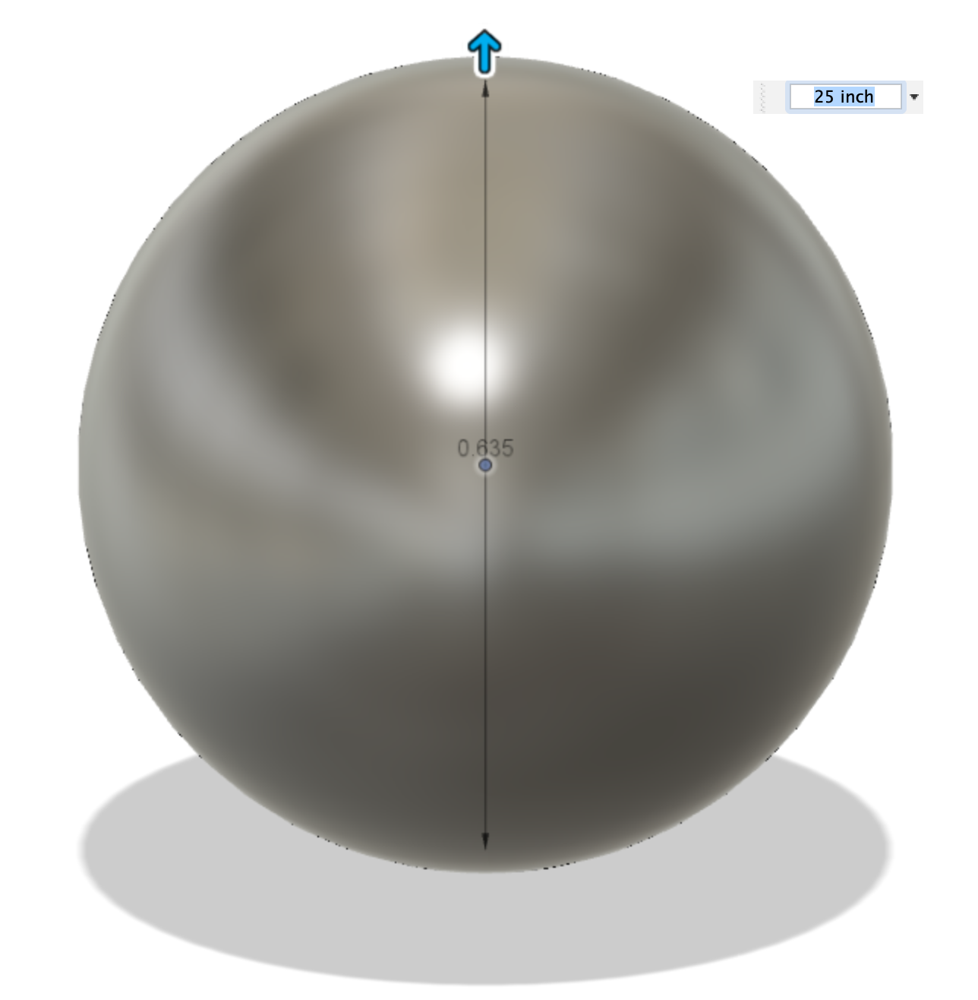
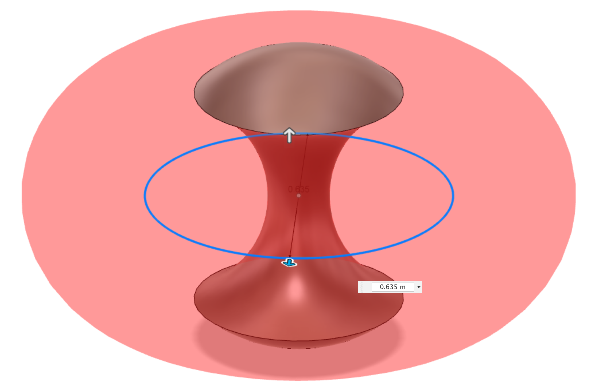
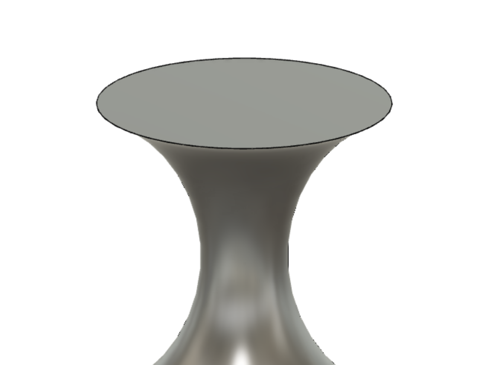
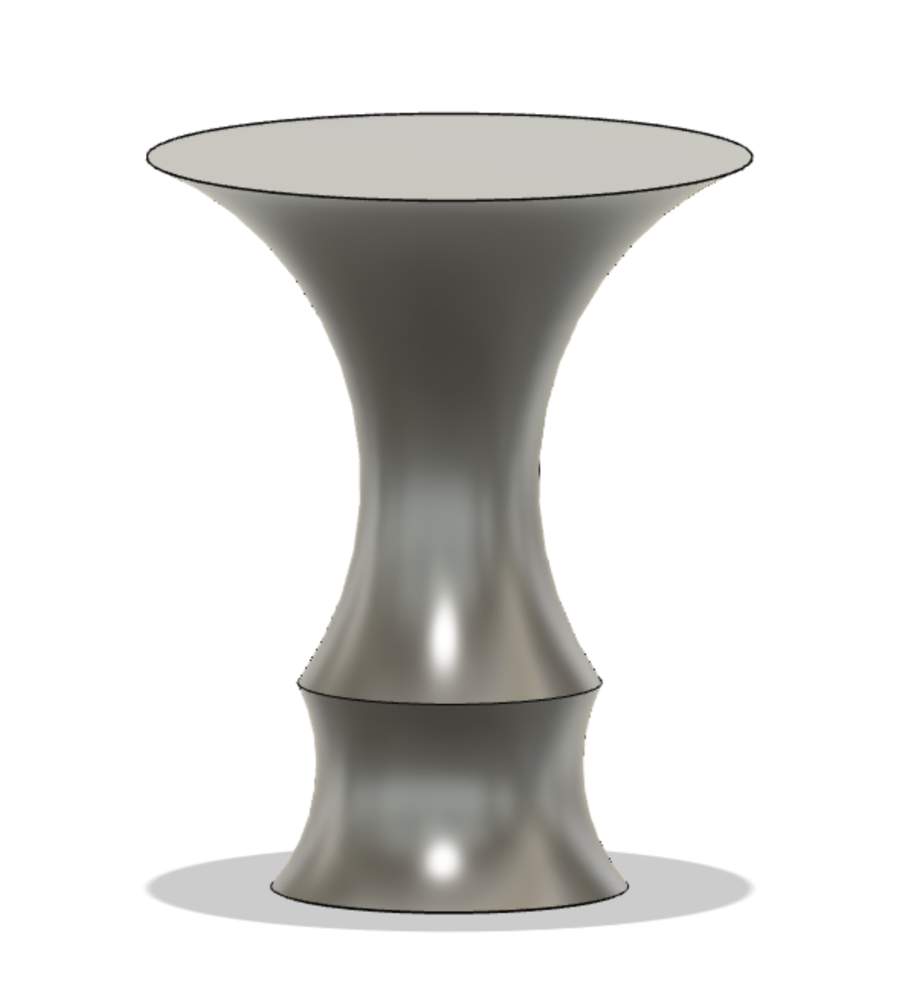
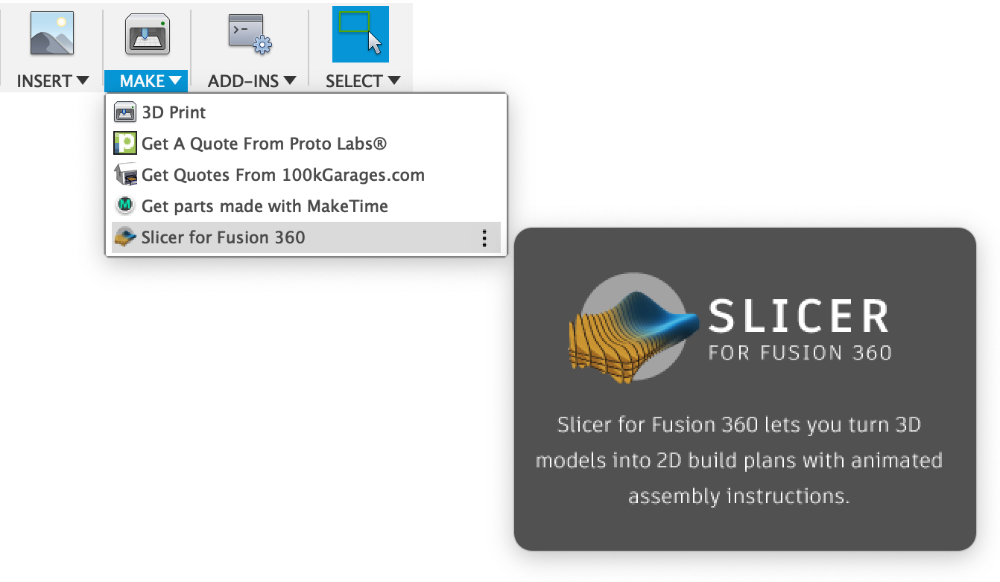

7.1 Designing and Slicing
Like last assingment, before using the Slicer Software I have to design my object. Instead of using the last design, I wanted to have a bedside table which looks like a "T." I usded Fusion 360 to design my object. Initially I created a sphere centered on origin with 25" in diameter.
After creating a Sphere, I wanted to get rid of the excess parts in the middle of it. How ever I wanted the top part to have supports thus I wanted a smooth transition from the column supporting the flat part of the table. For this I used the Torus tool to make a Torus with 25" diameter and 10" in thickness. I used the cut option and cut out that Area from the Sphere.
Now, I created planes in both direction (top and bottom) to create a sketch where I can create cylinder to cut out the rest of the Sphere and get a flat part.
However, the bottom of the object was too big, so I made it small by making another Torus and cutting the bottom like I did before.
After finishing designing, I used the MAKE tool to export my design to the Slicer Software.
After uploading my file to the Slicer Software, I set up the dimensions (25" tall) and which type of slicing I want. Then I chose interlocking with 12 slices in both axises. After sellecting these are the images I get.


Now that I have the images for the items that I have to laser cut, I can import them in to Adobe Illustrator and arrange so that instead of 7 files it will take less prints and less cardboard will be wasted.